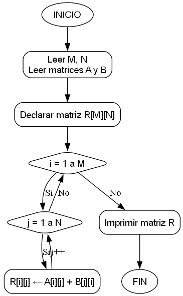

Suma de una matriz con la traspuesta de otra
Dada una matriz A(M×N) y una matriz B(N×M),
construya un algoritmo que obtenga la suma de A + Bᵀ e imprima
la matriz resultante.
Diagrama de flujo

Datos del problema
A[1..M, 1..N],B[1..N, 1..M]: arreglos bidimensionales1 < M < 10,1 < N < 10
Ejemplo en Java
Código (Java)
// src/Practica4_32.java
public class Practica4_32 {
public static int[][] sumarConTraspuesta(int[][] A, int[][] B) {
int M = A.length;
int N = A[0].length;
int[][] R = new int[M][N];
for (int i = 0; i < M; i++) {
for (int j = 0; j < N; j++) {
R[i][j] = A[i][j] + B[j][i];
}
}
return R;
}
public static void imprimirMatriz(int[][] R) {
for (int[] fila : R) {
for (int valor : fila) {
System.out.print(valor + " ");
}
System.out.println();
}
}
}
Ejemplo de ejecución
Entrada:
A = [[1, 2], [3, 4]]
B = [[5, 6], [7, 8]]
Salida:
Matriz resultante:
6 9
9 12
Prueba JUnit
// tests/TestPractica4_32.java
@Test
public void testSumaConTraspuesta() {
int[][] A = {{1, 2}, {3, 4}};
int[][] B = {{5, 6}, {7, 8}};
int[][] esperado = {{6, 9}, {9, 12}};
int[][] resultado = Practica4_32.sumarConTraspuesta(A, B);
for (int i = 0; i < 2; i++)
assertArrayEquals(esperado[i], resultado[i]);
}